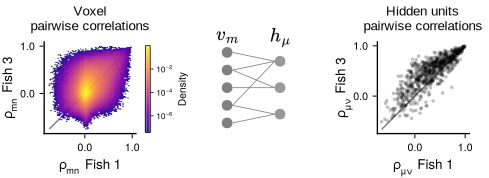
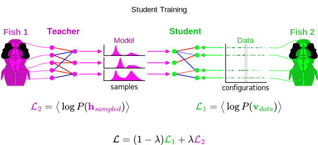
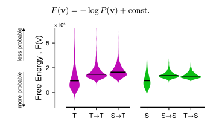

Introduction


this is not new
Introduction


comparing brain activity has been done for a long time
brains are different but share large scale functional organization
Introduction
Even if we can find similar large brain structure that are specialized at doing different things, why do we expect brain activity to be the same. The brain controles the behavior, and it's easier to understand what an animal does than how an animal thinks.
you can find a shared representation of the behavior
Introduction
this is a very simple example but you can generalize it to much more complicated behavior.
if we can find a shared representation space for behavior, and behavior is controled by the brain → we should be able to find a simplified reprentation of brain activity which explains the behavior.
Introduction


doing whole brain analysis in small animals where neurons can be identified
Very simple brain → we would like to study vertebrates
Introduction
The gap
Classical method for comparing brains
next I'll present the animal model we used, I'll present the methods I developed to solve this methodological problem, and then I'll try to use it to brain dynamics across individuals
Introduction
Zebrafish
Adult

Larva

- Complex behavior
- Transparent
- Small brain (~100k neurons)
- Genetic tools (GCaMP, ...)
Introduction
The gap
Introduction
The gap
Restricted Bolzmann Machines

spont recordings
zebrafish brain is controlled by a hinton deamon
Restricted Bolzmann Machines
The Theory
Geofrey Hinton
application to zebrafish by Thijs and Jerome
Restricted Bolzmann Machines
in zebrafish larvae
Restricted Bolzmann Machines
as multi-individual models

2 families of methods
Global Voxelized RBM


first method : 1 model for multiple indvs
a single latent space
Global Voxelized RBM
Stereotypy of representation


$$F(\mathbf{v}) = -\log Z -\log P(\mathbf{v})$$
compairing stereotypy in v and h
unified representation at coarse grained scales → what about neuron scale ?
Latent-aligned RBMs
building multi-individual models from neuron-level data
??
Latent-aligned RBMs
The Teacher-Student method




constraining latent space from one individual to another
reminder of goal (w spatial distrib + P(h))
Latent-aligned RBMs
Maintaining Spatial Distribution of Weights


??
description of different fish using the same cell assemblies
Latent-aligned RBMs
Maintaining Hidden Priors


need same space
the activity of multiple individuals can be mapped to the same latent space
Latent-aligned RBMs
Translating Activity from one Fish to Another
bidirectional generative model + same latent space → deepfake
we can now ask question : "how probable is the activity in the recipient?"
Latent-aligned RBMs
Translating Activity from one Fish to Another



Latent-aligned RBMs
Summary
use to compare dynamics
Dynamics of Spontaneous Activity

characteristic auto-correlation $\approx\! 2\!-\!3s$
↓
predictable over short time scales
stereotyped accessible subspace
different subspace exploration
A common space to compare dynamics across individuals
same position in latent space ?=? same "brain state"
Dynamics of Spontaneous Activity
Partitioning the Latent Space

h-bRBM ≈ h-sRBM
$$P(s\mid\mathbf{v}_t) = \mathbb{E}\Big[ P\big( s\mid P(\mathbf{h}\mid\mathbf{v}_t) \big) \Big]$$

??
sequence of states
Dynamics of Spontaneous Activity
Partitioning the Latent Space
$$P(s\mid\mathbf{v}_t) = \mathbb{E}\Big[ P\big( s\mid P(\mathbf{h}\mid\mathbf{v}_t) \big) \Big]$$

building sequence of states
video of state sequence
Dynamics of Spontaneous Activity
Partitioning the Latent Space
are those features similar across fish ?
Dynamics of Spontaneous Activity
Neuronal Composition of States

what do those states look like spatially across fish?
??
Dynamics of Spontaneous Activity
State Probability
$$P(s) = \frac{1}{T}\sum_{t=1}^T P(s\mid\mathbf{v}_t)$$


what states are the most probable
??
Dynamics of Spontaneous Activity
Markovian Dynamics
$$P(s\to s') = \frac{ \sum_{t=1}^{T-1} P(s\mid\mathbf{v}_t) \cdot P(s'\mid\mathbf{v}_{t+1}) }{ \sum_{t=1}^{T-1} P(s\mid\mathbf{v}_t) }
\quad\text{with}\quad \sum_{s'=1}^{S} P_{ss'} = 1.$$
markov diag

what is the structure of sequence ?
??
Dynamics of Spontaneous Activity
Markovian Dynamics
??
??
Conclusion
Ethics
SciComm
Thanks
Supplementary
Section Title
Smaller subtitle 1
$$\mathcal{U}(x) = \frac{1}{2}\gamma_+ x_+^2 + \frac{1}{2}\gamma_- x_-^2 + \theta_+x_+ + \theta_-x_-$$Section Title
Smaller subtitle 2
hey hey heeyintroduce contrastive loss → intuition first
segue: hardness-aware sampling
Section Title
Smaller subtitle 3
Anything goes here: text, images, charts…